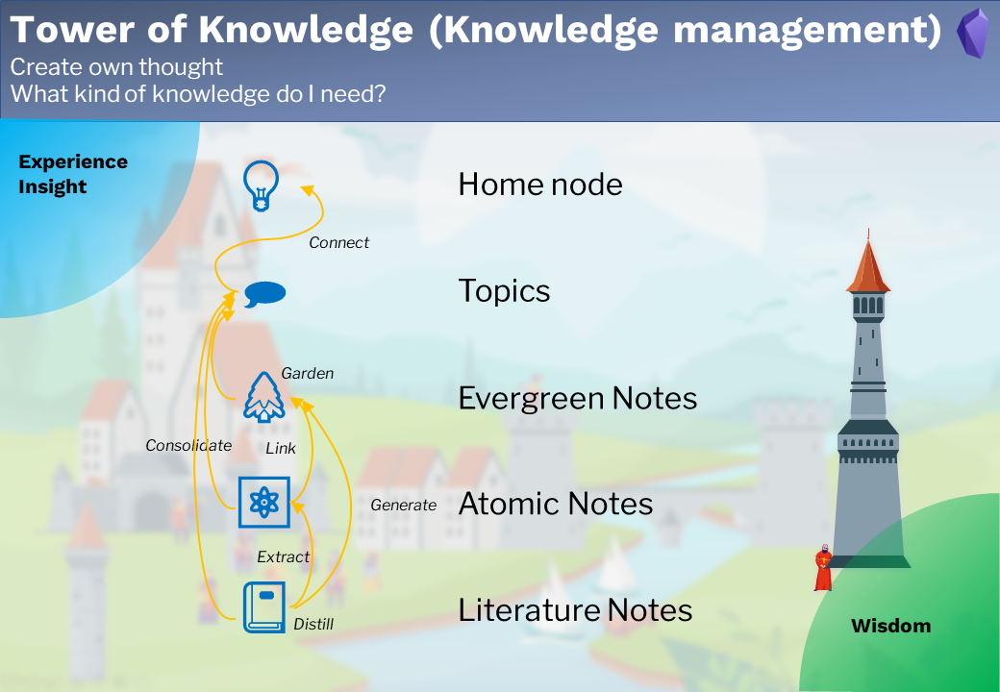

Knowledge Management

Note types
4 note types are used for personal knowledge management:
- 📔Literature Note
- ⚛️Atomic Note
- 🌲Evergreen Note
- 🗩Topic
The literature note includes all notes from the outside world. E.g., books, articles, tweets, and videos. It is normally a mixture of information pieces. E.g., facts, opinions, stories, and so on. These information pieces together create a medium, which I custom.
The atomic note is the note from the external but only includes a single knowledge point. E.g., a story, an aphorism. They are the extracted highlights from the literature note and can be cited later in my articles.
The evergreen note is the note for my insight. its maturity level grows with my new knowledge and experience. It is a single information piece within one topic.
The topic is a collection of literature notes, atomic notes, and evergreen notes, which handle the same issue. The maturity level of the topics grows as the number of his child notes increases.
Workflow
Literature note
-
Create literature notes by recording outside world information
-
Distill literature notes
Atomic note
-
Extract atomic notes from the literature note
-
Link atomic notes to evergreen notes
Evergreen note
-
Generate evergreen notes from the literature note, own experience and insight
-
Garden evergreen notes
Topic note
-
Create topic notes
-
Consolidate topics from literature notes, atomic notes, evergreen notes and sub-topic notes.
- Connect topic notes to the home node
The result from the knowledge management is wisdom.